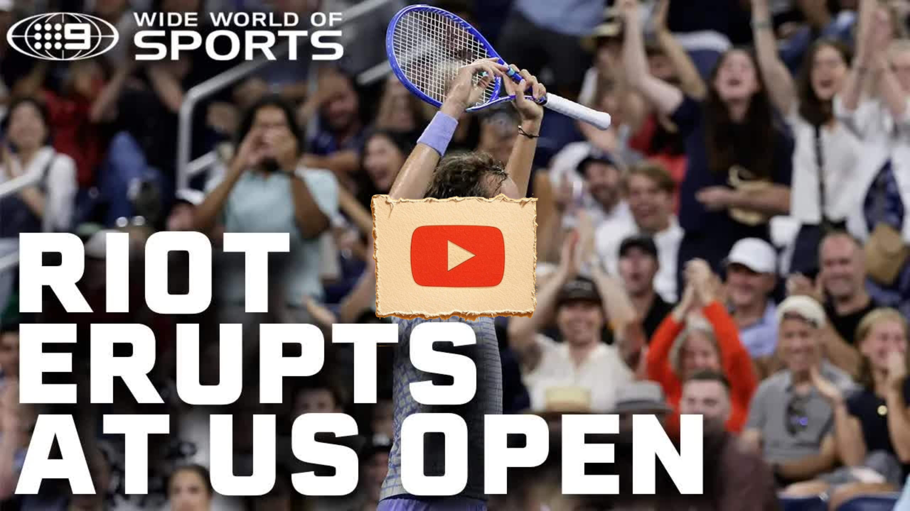

Great Pods
Medvedev SPARKS MASSIVE RIOT at the US Open | Wide World of Sports
Key Points
Match point situation for Benjamin Bonsi during a tennis match
Outside interference caused a significant delay in play
A cameraman unexpectedly walked onto the court during an active match
First serve was granted due to the disruption caused by interference
Player experienced complete loss of emotional control during the incident
The delay lasted approximately 4.5 minutes between first and second serve
Crowd became increasingly agitated and involved in the disruption
Chair umpire Greg Allenssworth made the decision to award first serve
Player refused to be rushed into serving despite the circumstances
Bonsi was described as the better player throughout the match
Fans felt they deserved their money's worth from the entertainment
The disruption incited crowd participation and escalated tensions
Commentators noted this was an unprecedented situation in their experience
The incident represented frustrations built up over the last couple of hours
Atmosphere became riot-like with crowd anticipation for potential missed serve
Player questioned about his composure and masculinity during the outburst
The situation created a highly charged and dramatic conclusion to the match
Professional tennis protocol was disrupted by unexpected outside interference
Full Transcript
Language: en [Applause] advantage. Bunsie >> match point. Bonsie, >> please. >> Wait, please. Not now. Get off the court, please. First serve, ladies and gentlemen. Because of the delay caused by an outside interference, first serve has been granted. Don't shake. It's okay. Are you a man? Are you a man? Don't shake. Why you shaking? Why you sh And it's a first serve. You want to go home? He wants to go home, guys. He doesn't like to be here. He gets paid by the match, not by the hour. Yeah. What did Riley Aelka say? What did Riley say? What did >> Let's play. He's just totally lost control of his emotions, says Medb. [Applause] Don't know what that cameraman was but uh the upshot of it all is that it'll be a first serve for Bonsi. [Applause] I've ever seen anything like it. ladies and gentlemen, Mr. Bonsi is ready to serve. Please. I can understand me feeling hard done by, but he has completely lost control of his emotions here. Please, ladies and gentlemen, I don't know why the cameraman came out of the pit and walked on the court whilst the match was still ongoing, but this is just a result of all the frustrations of not only the last two hours, but I think the last couple of Bonsi's been the better player. And I'm not sure that having a first serve is going to make that much of a difference to the outcome here. The fans feeling like they want to get their money's worth. And of course, it is a first serve. That's what all the hoopla was about. Second serve is the chance. It's about 4 and 1/2 minutes since that cameraman made his move onto the court between first and second serve. And of course it was off the back of that that Greg Allenssworth gave Bonsi a first serve because of the disruption that took place and then the disruption has continued since pretty much incited the crowd to get No, I'm not I'm not paying. I'm just going to the line and then going. I'm not paying Yeah, he's starting this. This should be tempation. I've never seen a situation ladies and [Applause] >> on making the point that he didn't create this situation so he doesn't feel he should be rushed into hitting the >> Yeah. This is unbelievable. Almost six [Applause] If he misses the first serve, it could be the biggest cheer of the night. [Applause] It is match point for Benjamin Bonsi. It's like a riot out here. Okay, one deep breath. Here we go. Oh. You called it, Colin.
← All Summaries
Watch on YouTube